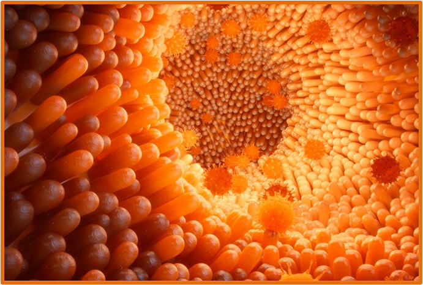

Lo Stomaco
Lo stomaco è un organo muscolare a forma di sacco, che mescola in continuazione il cibo (bolo) con i
Questi potenti
Dallo stomaco, il chimo passa nell'
- l'intestino tenue;
- E l'intestino crasso;